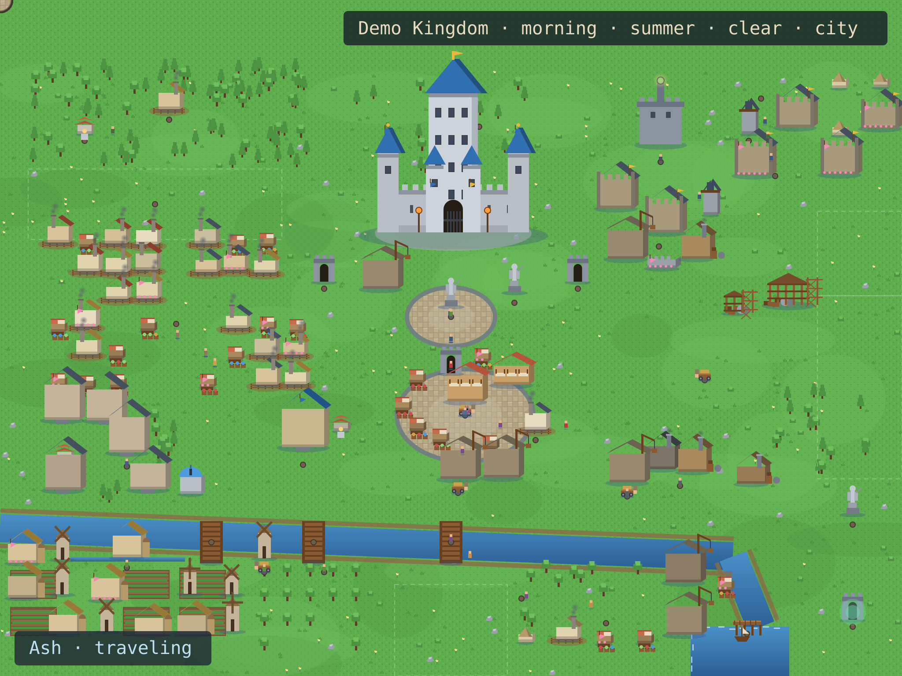
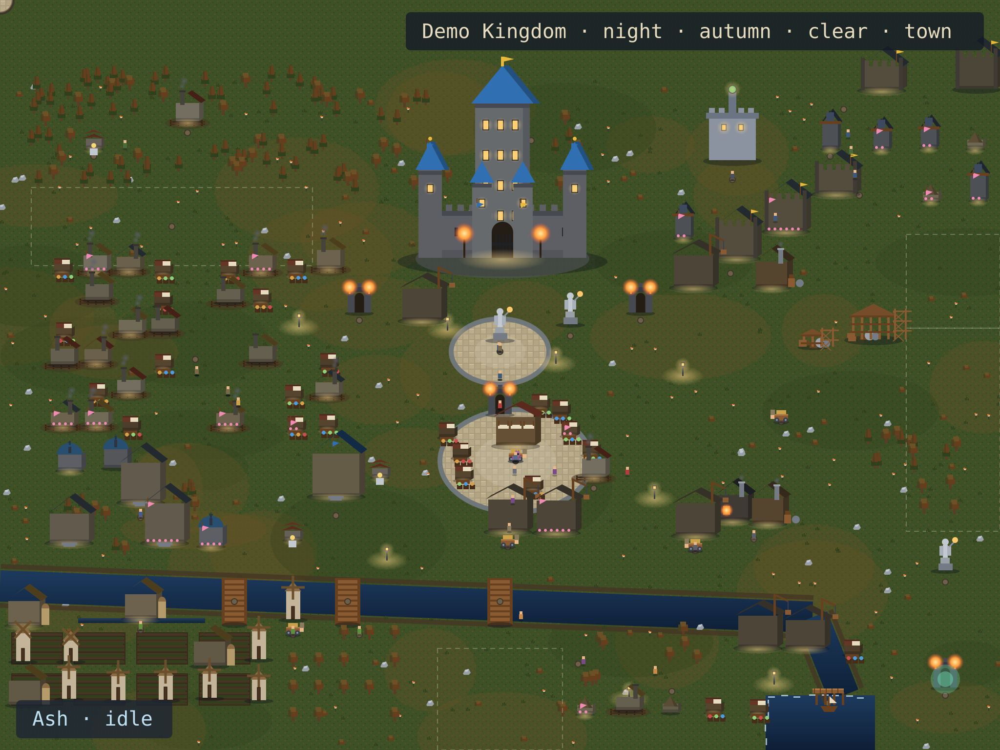
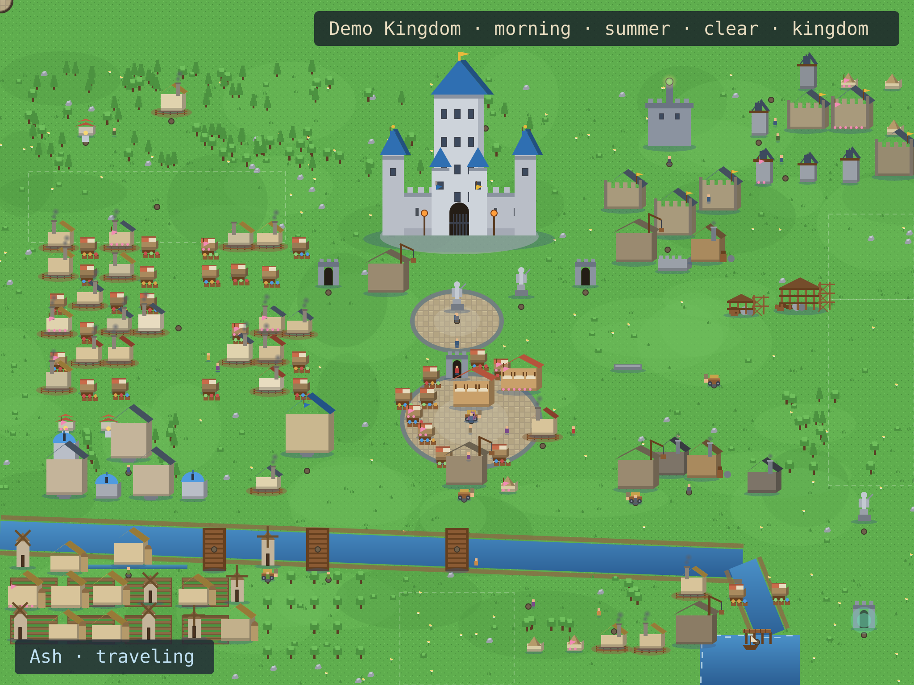
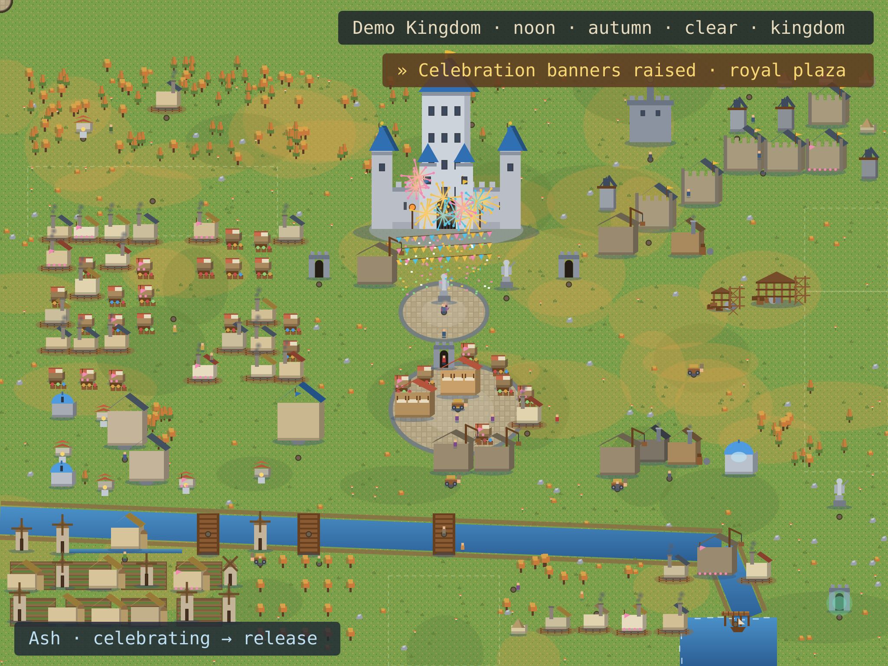
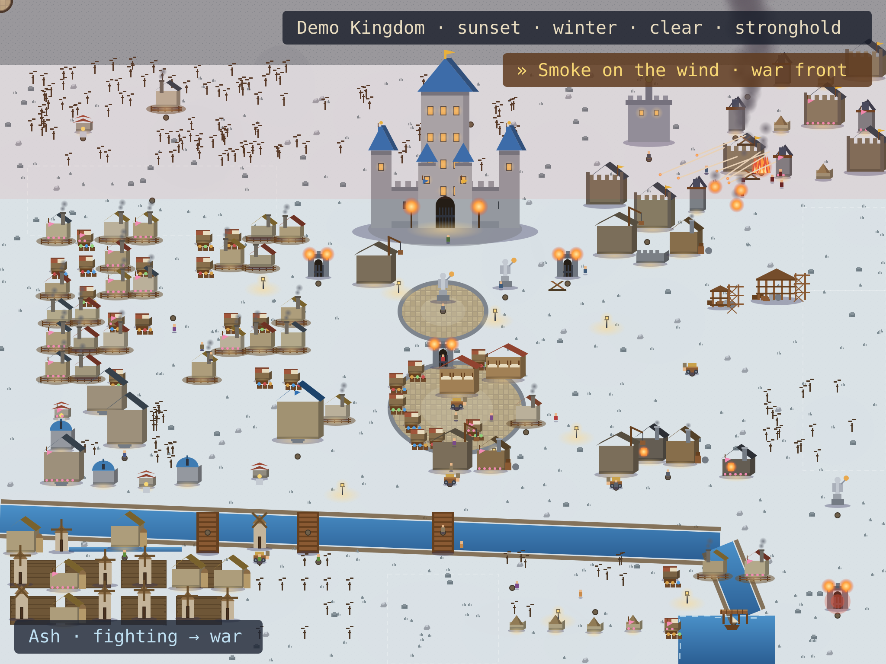
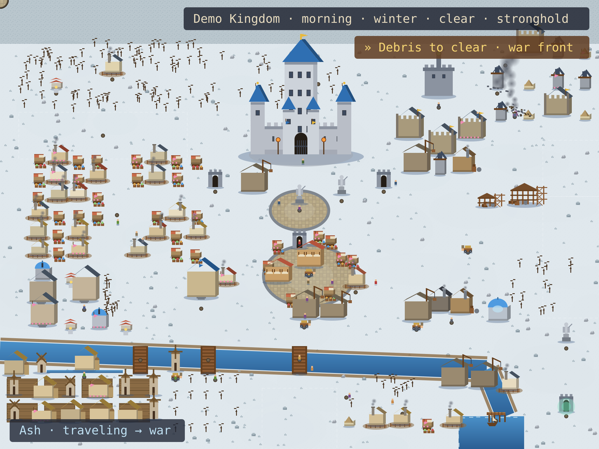

Eight curated deterministic scenarios. Each card shows the grand
world; every scenario folder also holds the mobile grand view and the
composed profile README. No JavaScript on this page — just pictures.

Peaceful Medium DayA medium kingdom at morning: workers active, market open, hero on routine rounds. profile README · mobile view

Quiet NightNight, no events: homes lit, guards on patrol, no fake drama. profile README · mobile view

Major Project BuildAn active construction site: scaffolding, workers, material deliveries. profile README · mobile view

Release PeakA major release at peak celebration: banners, fireworks, hero at the plaza. profile README · mobile view

War BattleBattle at the front: defenders, hero, enemy cohort, smoke and fire. profile README · mobile view

War AftermathAfter the battle: damage, smoke, debris, repair crews moving in. profile README · mobile view